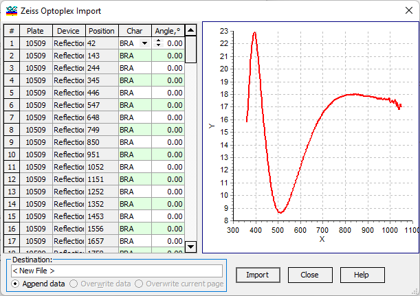

Zeiss Optoplex
All traces of the opened file are displayed in the left grid view. A graphical representation of the selected trace is shown in the right panel.

In the Destination field, the name of the data file being edited and the destination page are indicated. You have the option to append data, overwrite data in the existing file, or overwrite only the current page. Additionally, you can change the destination to any of the currently opened Measurement editors or create a new one.
When the Import button is pressed, the content of the current trace will be transferred to the selected Measurement file.